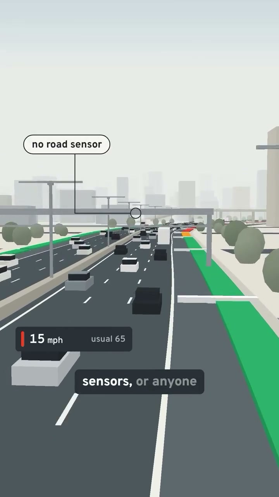
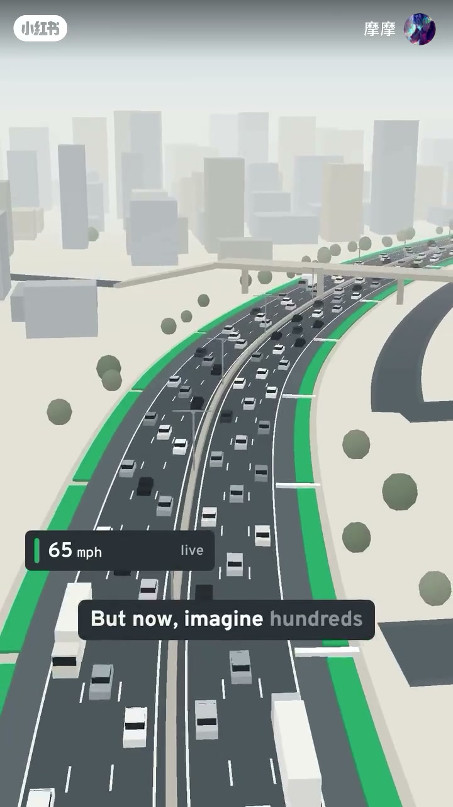
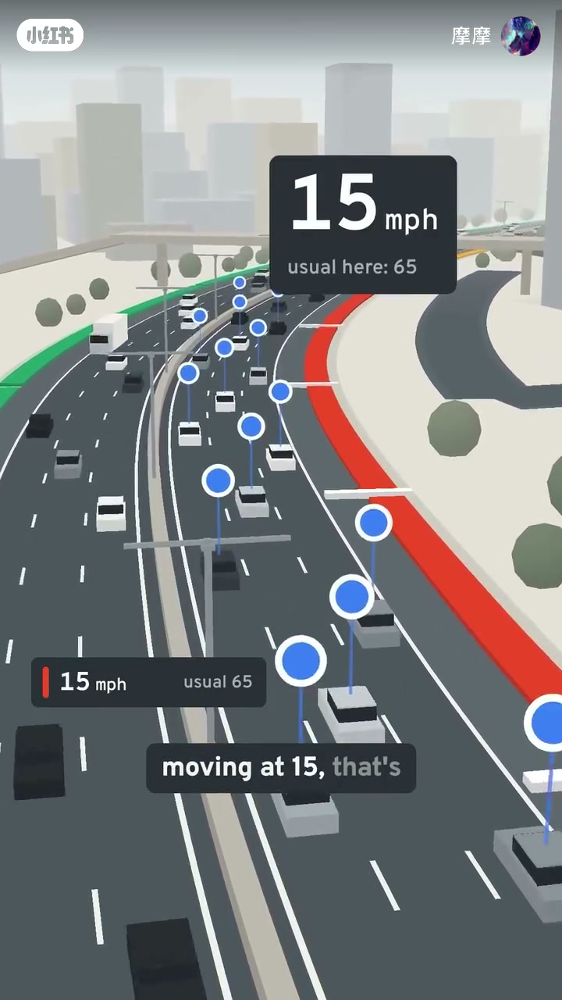
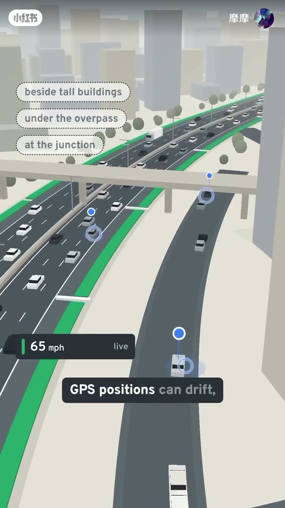
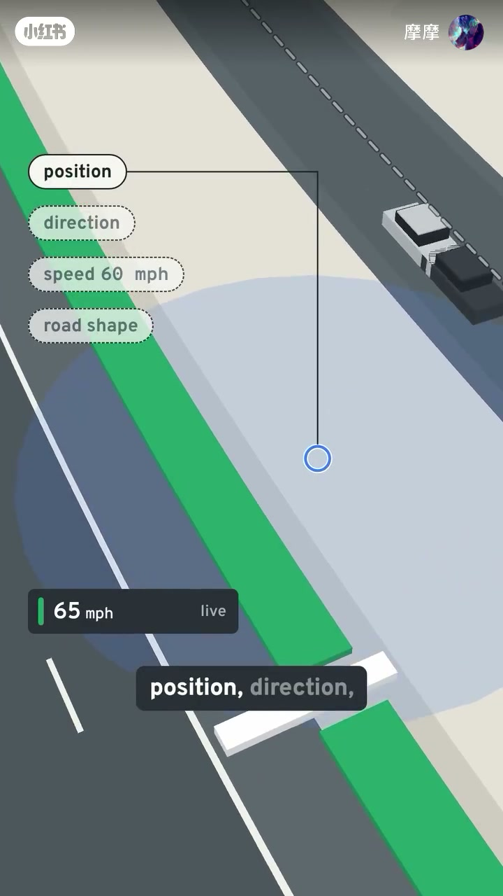
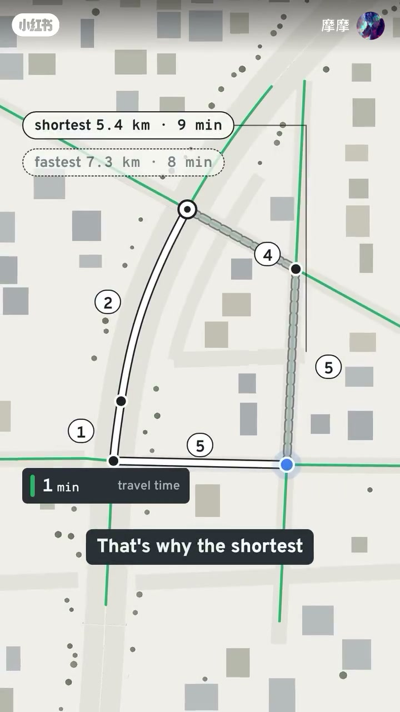

内容要点
「摩摩」用低多边形公路动画讲解 Google 地图路况：开场英文点明地图能提前看见前方堵车，关键不是路边传感器，而是手机匿名上报位置与速度。成百上千部手机的数据汇总后估计路段速度；相对常态从约 65 mph 掉到 15 mph，就是强烈拥堵信号。系统并不只信原始 GPS——高楼、高架、路口会让定位散乱，还要用方向、速度与道路形状对齐。最后用多设备聚合、对照时段常态，并把通行时间写成路网边权：更短的公里数也可能更慢。Whisper 在 57 秒后为空，后半段以画面英文字幕与 UI 数字为准。
知识结构
手机即路况传感器；画面标「no road sensor」，15 mph 对比 usual 65。
百多台手机位置更新汇总到路段；常态 65mph 突降至 15mph = 强信号。
不只信 GPS；raw fixes 会偏，需 position / direction / speed / road shape。
多机聚合优于单机；对照 usual for this hour；最短 5.4km·9min vs 最快 7.3km·8min。
路况来自手机众包速度相对历史常态的偏离；原始 GPS 必须先对齐道路，再用时间边权选「最快」而非「最短」。
00:00–00:30手机即路况传感器：不用路侧设备也能看见前方拥堵
开场英文口播直接抛出命题：「Google maps can see a traffic jam miles ahead of you」——地图能在你前方数英里外就看见堵车。动画里拥堵车道上方密布蓝色定位点，速度条写着 15 mph，旁边灰色小字是 usual 65；路缘用绿/橙/红标出通畅与拥堵段落。
画面随即点破常见误解：桥架上没有路边感应器，标注写着「no road sensor」。真正在报数的，是车里开着定位服务的手机——哪怕只是「One phone slowing down」，系统也开始把实时速度与常态对照。视频未交代具体隐私协议细节，只演示「手机 = 匿名路况传感器」这一机制。

00:30–00:52众包估速：常态 65mph 突然掉到 15mph 就是强烈信号
镜头拉到车流更密的弯道，字幕接「But now, imagine hundreds」。口播（繁体转简）说：想象有百多台手机在同一条路上行动；Google 可以把这些位置更新的数据集中到某条路的部分，并估计每一条路段的速度。
判断拥堵靠的是对比，不是绝对数字：如果车辆通常以约 65 mph 通过，却突然有大量设备以约 15 mph 移动——口播称「那是很强烈的信号，因为车速慢了」。Whisper 把「手机/设备」听成「机器」，结合蓝色定位球与英文字幕 large cluster，正文按设备集群理解。笔记文案里也有类似例子（高速从约 100 km/h 掉到 20 km/h），与动画用的 mph 演示同属「相对常态的骤降」。


00:52–01:25不只信原始 GPS：先对齐道路，再谈速度可信
口播强调：Google 并不只相信 GPS 数据。俯视图上标出「raw GPS fixes」——蓝圈散落在车道各处，并不整齐地落在你真正行驶的那条线上。随后画面列出误差场景：高楼旁边、高架桥下、复杂路口（beside tall buildings / under the overpass / at the junction）。
要对齐道路，系统会同时看 position、direction、speed、road shape：位置点、行驶方向、瞬时速度，以及道路几何形状。Whisper 末句「GPS 的位置可以变得更快」语义残缺，疑为误听；本段不以该句作定量结论，而以画面标签与笔记文案「GPS 不准，要先找对路」为准。


01:25–02:39多设备聚合、对照历史、给边加权：最短路不一定最快
本段 Whisper 为空，叙述完全依据画面 UI。先对比单机与集群：一辆车单独报 30 mph，31 部手机聚合后显示约 63 mph live——「from many devices, instead」。再把 live 速度和「usual for this hour」对照；时钟停在 17:30 一类高峰示意，说明系统会问：现在慢，是相对这个时段的常态慢，还是真异常。
估速之后进入路网：边（edge）按通行时间加权，而不是只按公里数。示意图给出 shortest 5.4 km · 9 min 与 fastest 7.3 km · 8 min——更短那条反而更慢；另一帧用「9 min city streets / 10 min highway」和标红的 3 分钟贵价路段，解释为什么地图会绕开看起来近、实际堵的边。收束回到拥堵可视化：提前知道堵车，是为了用时间边权重算「最快到达」。

完整转录（9段）
以下文本由 Whisper medium 模型自动转录（已转简体）。00:03–00:30 与 00:57 之后口播识别为空，章节叙述主要依据画面英文 UI/字幕；「机器」等词可能为识别误差，详见章节说明。
Google maps can see a traffic jam miles ahead of you
想像到有百多台手机在同一条路上行动
Google可以把这些位置更新的资料集中在某条路的部分
并估计到每一条路速度的速度
如果车辆通常在那边走过65mph
但大量的机器突然在15mph走动
那是很强烈的信号,因为车速慢了
但Google并不只相信GPS数据
GPS的位置可以变得更快